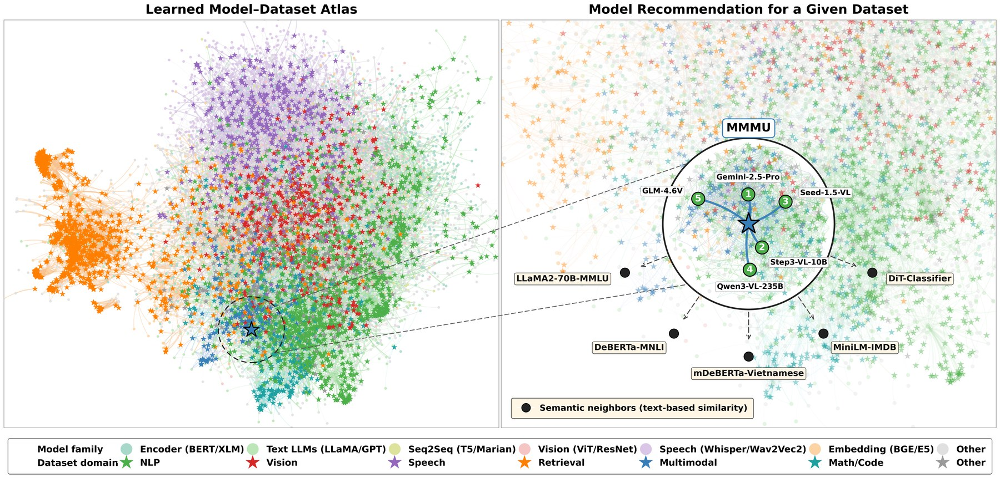
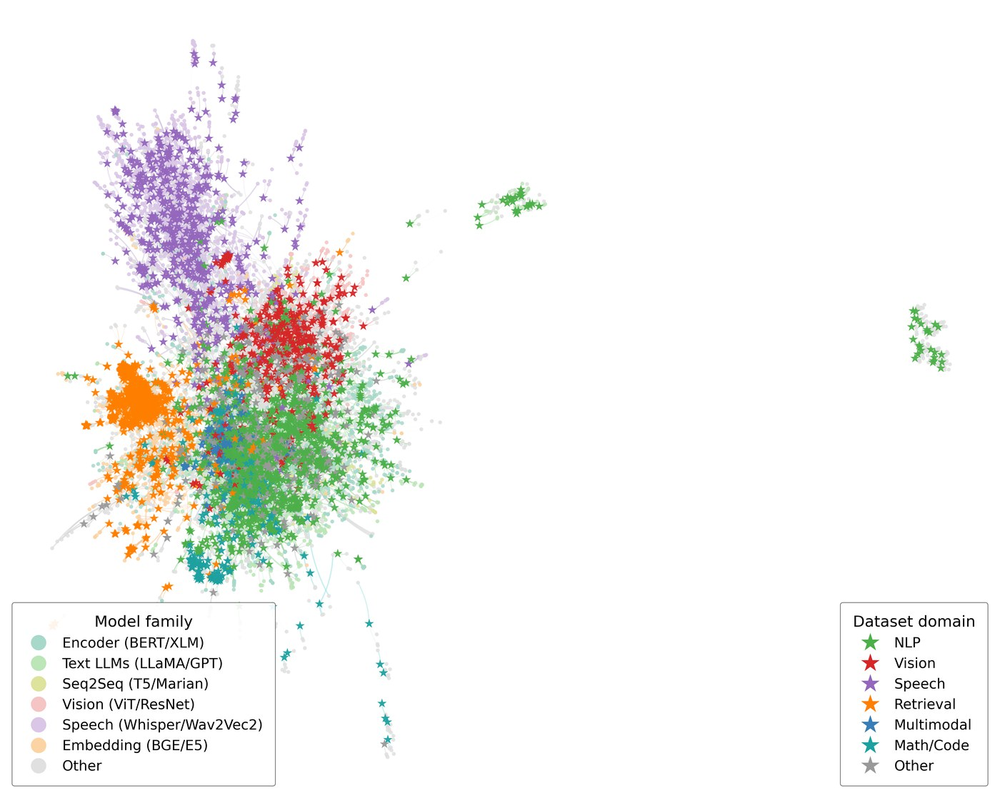
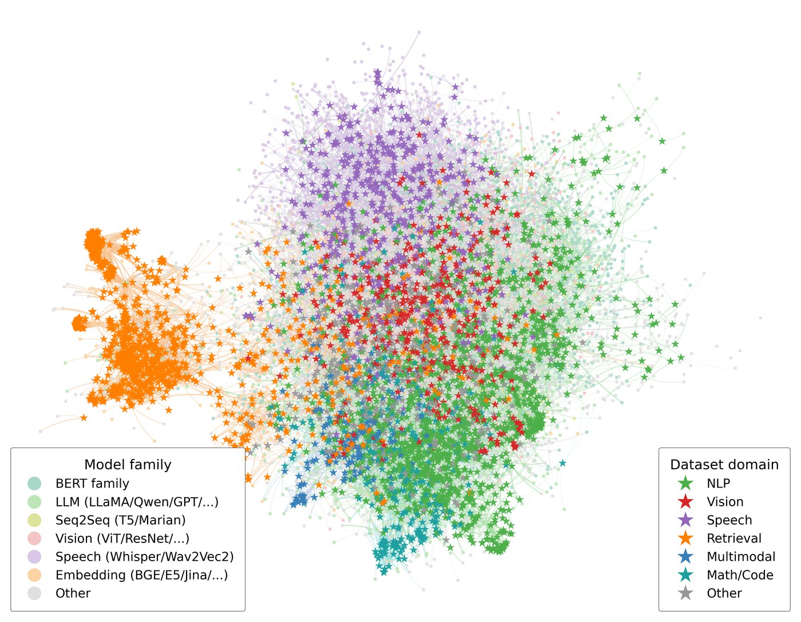

Multi-hop QA
HotpotQA
- 1 LLaMA-3.3-70B 70B
- 2 GPT-OSS-20B 20B
- 3 Qwen3-32B 32B
Finding the best for your task from Myriads of Models
Rui Cai†, Weijie Jacky Mo†, Xiaofei Wen†, Qiyao Ma†,
Wenhui Zhu‡, Xiwen Chen§, Muhao Chen†, Zhe Zhao†

Motivation
HuggingFace alone hosts hundreds of thousands of pretrained models, and new ones appear every day. For any new task, the very first question — "which model should I use?" — has become genuinely hard.
Existing answers each fall short:
ModelLens learns model–dataset compatibility directly from 1.62M public leaderboard records, then ranks unseen models on unseen datasets zero-shot — using only metadata.
By the numbers
1.62M
eval records
47K
models
9.6K
datasets
+21–81%
improvement on five representative routers across QA benchmarks, using ModelLens-recommended candidate pools.
Method
From noisy public leaderboard records to zero-shot recommendations for unseen datasets and unseen models.
Stage 1
Aggregate large-scale model–dataset evaluations from public leaderboards and curated sources into a unified (model, dataset, task, metric, score) corpus.
Stage 2
A multi-view ranker fuses learned IDs, name tokens, model-card descriptions, size buckets and architecture families — trained with a listwise + pairwise + pointwise objective and ID dropout for cold-start generalisation.
Stage 3
Given a new task or dataset (text + metadata), ModelLens returns a ranked Top-K candidate pool — no forward passes on the target task required.
What it learns
Open-source models are proliferating rapidly, and recent position papers call for systematic profiling of models and a better understanding of their competency. Model Atlas (Horwitz et al., NeurIPS 2025) was a key inspiration: it maps the model ecosystem itself, revealing family structure and lineage across the open-source landscape.
Building on that idea, we draw a similar map for our models — and go one step further by embedding datasets in the same space, so the atlas exposes not just which models cluster together, but which datasets each model is actually compatible with.
Same projection below, different latent sources. Text similarity gives a tangle; interaction-aware learning recovers family and domain structure on its own.

Semantic-only baseline
Frozen text-embedding similarity between model cards and dataset descriptions — what a metadata-only retriever sees. Families heavily overlap in the centre.

ModelLens ours
Same projection, learned latents. Speech (orange) detaches cleanly; retrieval embedders form their own arc; vision and multimodal models bridge the text–vision boundary.
Interactive atlas
A zoomable, searchable map of 13.6k models and 9k datasets, positioned by ModelLens's learned compatibility geometry. Click any node to see its top-K compatible counterparts ranked by real benchmark performance.
Live demo
Type a task description, and ModelLens returns a ranked pool of candidate foundation models from the open-source ecosystem.
If the embed is slow to wake up, the Space may be cold-starting from sleep.
Examples
A few illustrative recommendations across task domains. The live demo returns full ranked Top-K pools with scores.
Multi-hop QA
Multimodal QA
Math reasoning
Code generation
Resources
Cite
If you find ModelLens useful in your research, please cite:
@article{cai2026modellens,
title = {{ModelLens}: Finding the Best for Your Task from Myriads of Models},
author = {Cai, Rui and Mo, Weijie Jacky and Wen, Xiaofei and Ma, Qiyao
and Zhu, Wenhui and Chen, Xiwen and Chen, Muhao and Zhao, Zhe},
journal = {arXiv preprint},
year = {2026}
}